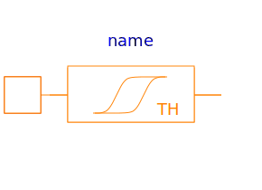
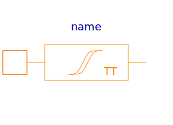
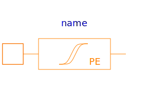
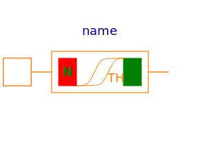
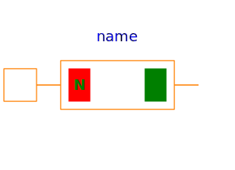

Please have a look at UsersGuide.Hysteresis for an explanation of the Content of the package.
| Name | Description |
|---|---|
|
|
Generic flux tube with soft magnetic hysteresis based on the Tellinen model and simple tanh()-functions |
|  GenericHystTellinenHard | Generic flux tube with hard magnetic hysteresis based on the Tellinen model and simple tanh()-functions |
|
|
Generic flux tube with ferromagnetic hysteresis based on the Tellinen model and the Everett fucntion [Ya89]) |
|  GenericHystTellinenTable | Generic flux tube with ferromagnetic hysteresis based on the Tellinen model and table data |
|  GenericHystPreisachEverett | Generic flux tube with ferromagnetic hysteresis based on the Preisach model and the Everett function [Ya89]) |
|  GenericHystTellinenPermanentMagnet | Permanent magnet based on the Tellinen hysteresis model |
|  GenericLinearPermanentMagnet | Permanent Magnet with linear characteristic |